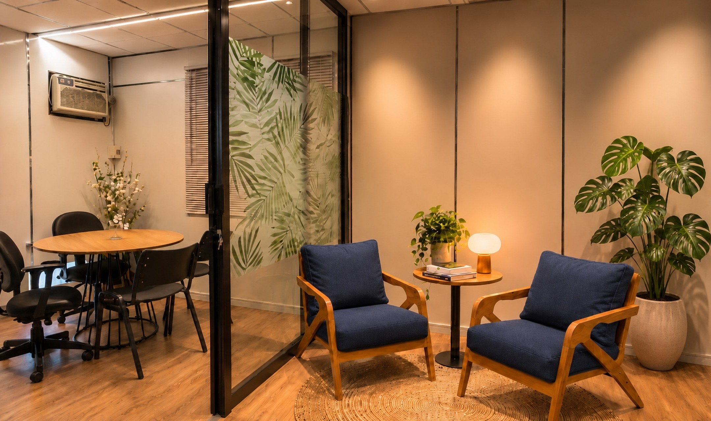

fairhealth · Cuidado em números
2026 //
Por que a Geração Z
está tão desconectada
do trabalho?
Não é preguiça. A desconexão tem causa.
fairhealth · Cuidado em números
2026 //
Entre fevereiro e março de 2026,
a pesquisadora Renata Rivetti e o
Instituto Ideia perguntaram a
1.500 brasileiros o quanto
estavam satisfeitos com a vida.
Na faixa de 16 a 24 anos, só 33% disseram estar muito
satisfeitos. Dos 25 anos para cima, 47,9%. Nenhuma
outra idade respondeu tão baixo.
fairhealth · Cuidado em números
2026 //
No trabalho, a distância entre
os jovens e o resto do país
passa do dobro.
46,7%
dos jovens de 16 a 24 anos
dizem que o trabalho os deixa
mais infelizes. Nas outras
idades, a resposta cai para
20,5%.
É a fase do estágio e do primeiro emprego. É também a fase
em que a relação com o trabalho se forma.
fairhealth · Cuidado em números
2026 //
Na hora difícil, mais de 1
em cada 5 jovens diz não
ter com quem contar.
Entre os mais velhos, 88,5% têm alguém por perto. Na mesma
faixa, 27% vivem preocupados com frequência (18% nas outras
idades), e 71,1% já se sentiram tristes depois de usar as redes
sociais.
fairhealth · Cuidado em números
2026 //
Desconexão tem causa. E
nenhuma delas é a idade.
01
Sobrecarga e falta de autonomia
02
Falta de sentido no que faz
03
Ansiedade e sono ruim
04
Aperto financeiro
05
Ninguém por perto para conversar
Vários desses são riscos psicossociais, que a NR-01 agora pede
para a empresa gerenciar. Rótulo, palestra uma vez por ano e
mais um app que ninguém abre não chegam a nenhum deles.

fairhealth · Cuidado em números
2026 //
No Escritório do Cuidado
Todo atendimento começa com a
mesma pergunta:
o que importa para você?
Médicos, psicólogos, assistentes sociais e felicitologistas dentro da
empresa. Medições com bioimpedância e smartwatches e um plano
individual, com base na Medicina do Estilo de Vida, para cada pessoa,
de qualquer idade.
O RH não fica sabendo o que cada um contou: recebe dados
anonimizados e agregados.

fairhealth · Cuidado em números
2026 //
Para o líder, a partir de amanhã
Três perguntas no
lugar do rótulo:
1
O que está pesando para você?
2
O que faria sentido aqui?
3
O que importa para você?
Comente CUIDADO e mostramos como o Escritório
do Cuidado funciona na sua empresa.
Fonte: Mapa da Felicidade Real dos Brasileiros 2026, Renata Rivetti e Instituto Ideia. 1.500 entrevistas
em todas as regiões, de 20/02 a 01/03/2026, margem de erro de 2,5 pontos.